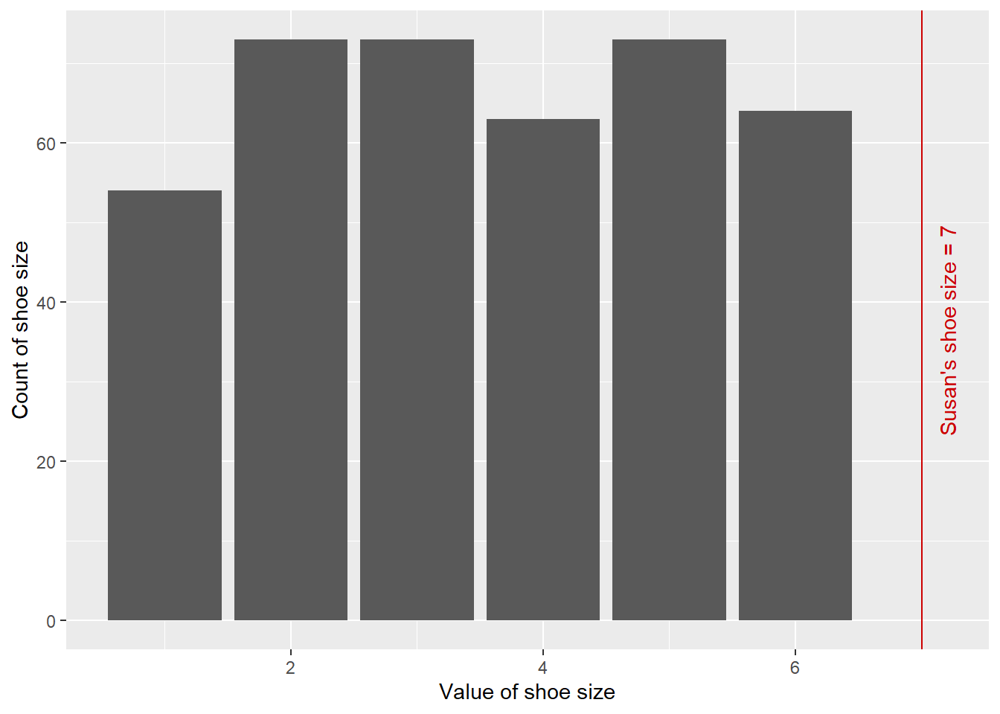

Data literacy
data literacy
beginner
About this course
This course is designed to give you an introduction to thinking with data to understand aspects of health and care systems, regardless of their technical background.
The course focuses on using data to answer real questions about the services and systems you work in. Whether you want to understand how busy a service is, how things are changing, or what your local population needs, this course gives you the tools to explore those questions using information you can count and compare.
At the same time, data literacy is also about confidence: the confidence to ask questions, to notice when numbers do not add up, and to avoid having the wool pulled over your eyes by statistics used without context.
Across x weeks, we will cover how data is collected, how to organise it using tools like Excel, and how simple statistics help us summarise and compare information. We will work with real-world questions such as:
– Is our hospital busier than it was last year? – Do we have proportionally more children than average in our town? – How many people are currently homeless in Scotland? – Are care home residents in our area experiencing more falls than in similar areas?
The course will run in a positive, supportive, and practical learning environment, with opportunities to learn from colleagues’ experiences across services. Sessions are deliberately not recorded to create a space where people can ask questions openly and explore ideas without pressure.
By the end, you will be able to use data to provide clear, practical answers, understand the limitations of those answers, ask better questions, and communicate your findings confidently to others.
Introducing data literacy
What is data, and why would we think about it? In this session, we’ll explore the idea that data is an especially powerful way of understanding how systems in health and care work. That means that data is an excellent way of asking some of the common questions about our work that we might like to answer. For example, we might want answer questions like:
- “is our hospital busier than it was last year?”
- “do we have proportionally more children than average in our town?”
- “how many people are currently homeless in Scotland”
While there are many possible ways of answering such questions, this course will concentrate on using data to provide answers. For example, we could find data that would help us answer the questions above. That might look like:
- a month-by-month count of patients visiting our hospital for the last two years
- census data, showing demographics of different towns in Scotland
- survey data estimating how many people are currently homeless nationally
Here, we’ll think about data as structured information, usually numerical, that tells us about part of a system.
This course will talk about several aspects of working with data. First, we’ll talk about how data can be collected from systems. Thinking about our three example questions again, we could collect data by:
- adding up all the inpatient and outpatient appointments each month
- asking everyone in Scotland to complete a census return every few years
- requesting services supporting the homeless to estimate how many service users they see each week
We’ll also talk about how to manage that data we’ve collected, by looking at some common tools (like Excel) that help manage data. That conversation about tools will then lead us to thinking about how to use statistics as a set of mathematical tools for helping us understand, summarise, and compare data that we’ve collected. Finally, we’ll talk about how to take those statistics, and use them to do things. As we’ll see, statistical summaries of data are especially helpful in helping us understand the systems we’re working on. We’ll look specifically at three areas where understanding is especially important: explaining how systems work, predicting what will happen as our system changes, and controlling the behaviour of that system.
Together, we’ll describe this linked set of skills as data literacy, which describes a set of knowledge and skills across the data journey. That means that we’ll think about data literacy as being made up of a a combination of:
- understanding how systems can be data-fied
- having some awareness of the tools and rules for gathering data
- knowing a bit about some statistical tools used to understand, summarise, and compare that data
- understanding some effective strategies for using this data (and statistics) as a basis for the explanation/prediction/control of systems, including how to communicate your findings to others
- finally, figuring out how to use that knowledge of what you want to do with your data to simplify and streamline other aspects of the data journey
Data-fying systems
Or, an introduction to measurement
Collecting data
Five-ish questions 1. Where did this data come from? 1. What sort of data is it? 1. How is it relevant to what I’m doing? 1. Do we need to do this work anew, or is it already done? 1. What’s wrong with this data 1. Where are the gaps we can fill 1. Where are the non-fillable gaps 1. How might it need re-engineering? 1. How can I save someone time in future
Ignore storing data: that’s too tech-dependent
Warnings about data collection
Statistics
We’ve talked a lot about how to collect data from a system. In this session, we’ll talk about some statistical tools for understanding what that data might mean.
Introduction
Imagine that we are measuring some numeric health or care value in an individual This could be, just for example:
- height
- blood pressure
- number of years since retirement
Without knowing what’s generally expected, the number by itself doesn’t tell us anything very interesting. We need some context to make sense of an individual number. For values like blood pressure, we often have reference ranges that tell us what a normal blood pressure might be. For other values (like height, or number of years since retirement) we generally have some clear idea of what a normal number might be from our daily experience.
Broadly, these ways of making sense of a value are about comparing a number to the normal expected range of that number.
Imagine that we’re data-fying some system, and (for reasons better left unexplored) decide to record the shoe sizes of our colleagues. We start with Susan, and rapidly discover that she wears a UK size 7.
Here’s the question: is that good?
Without some kind of context for that number, we can’t really make sense of what it means. So let’s compare Susan’s shoe size with all the other shoe sizes that we find in our organisation. Put together, and counted in groups, we might end up with a graph that looks like this:1
This suggests that Susan’s shoe size might be unusual and interesting, as it’s higher than any of the other shoe sizes in our comparison group. For us, the gathering together of other shoe size data also build a really important statistical tool here (although it might not feel like it!). This graph showing how a value varies in a population is called the empirical frequency distribution. We’ll explore this in the next section.
Effective strategies
Storytelling
Session outline
- why think about storytelling?
- a warning about the analyst’s pitfall
- four principles for better data storytelling
- a practical run-through of those principles
Why think about storytelling?
- this is a session about some aspects of telling stories with data
- it’s needed because:
- bad graphs are everywhere
- and everyone has an opinion about what makes good graphs
Bad graphs are everywhere
Everyone has an opinion about how to improve graphs
- OCS spreadsheet checklist // chart checklist
- Cole Nussbaumer Knaflic
- Mike Mahoney
- Hadley Wickham
- Jeffrey Hee
- if you’re a data viz person, or want to be one, you should read all of those (and more). You’ll need all the details.
- the rest of us can go a very long way with four simple storytelling principles
- this session will look at these rules as applied to graphs. You could apply them to other areas of your work
The analyst’s pitfall
- Doing a piece of analysis gives you an odd perspective on an issue:
- time served
- starting expertise
- power of details
-
Two cases:
- How long did your last project take to create?
- How long did you spend reading the last project report/dashboard/statistical output that you read?
you understand and know the bones of the project. You’re driven by details.
your reader doesn’t. The details are a barrier.
beware the comforting fallacy of including all the information for the sake of precision: it’s a category mistake
you need to know it all, too: the domain knowledge is important
On exactitude in science
…In that Empire, the Art of Cartography attained such Perfection that the map of a single Province occupied the entirety of a City, and the map of the Empire, the entirety of a Province. In time, those Unconscionable Maps no longer satisfied, and the Cartographers Guilds struck a Map of the Empire whose size was that of the Empire, and which coincided point for point with it. The following Generations, who were not so fond of the Study of Cartography as their Forebears had been, saw that that vast Map was Useless, and not without some Pitilessness was it, that they delivered it up to the Inclemencies of Sun and Winters. In the Deserts of the West, still today, there are Tattered Ruins of that Map, inhabited by Animals and Beggars; in all the Land there is no other Relic of the Disciplines of Geography.
Four principles
- Be obvious, and know what you want to say
- Be explicit, and make that point directly to your audience
- Be simple, and select the telling details
- Be concise, and omit everything else
Be obvious
Know what you want to say
Be obvious
- most data sets can support lots of different conclusions
- it’s your job to decide which conclusion a reader should draw
- your knowledge of the data is key
- lots of planning/storyboarding
- lots of trying to boil down complicated data into simple stories
Be explicit
Know your audience, and speak directly to them
. . .
- different groups will have different needs
- communicating with other KIND people will present different demands to talking to managers
- correct choice of graph
Perceptual ranking

[@mackinlay1986]
Chart-selection advice
- change over time = line
- comparing quantities between times or places = column
- counting groups = histogram/density plot
- comparing groups across categories = something stacked
Be simple
Select the telling details for your reader
- highlight the details right on the graph: don’t leave a reader to guess what your point is
- add annotations and titles telling us what the point of the graph is
Be concise
Omit everything else (Tufte fans would call this chartjunk)
- random colours / rainbow graphs break conciseness
- grid lines, background colours,
- unless it helps tell the story
What’s the obvious point here?
- horrible trick question: there isn’t one
- we could tell hundreds of different stories with this data
- breakouts: a once-sentence idea about what to do with this data
How to be explicit about that?
How to be simple about that?
How to be concise
Constraining your system
What are we avoiding?
- qualitative
Acknowledgements
Ian Douglas (NHS Highland) for basically summing up the whole course in an email. Maria McAllister (HIS) and Kristi Long (NES) for changing the way we defined data in this course. Kenneth Mack (HIS) for probing on the difference between data and information. Gail Gibbs (NHS Lanarkshire) for starting off the five questions about data line of work. Judi Evans (PHS) for overall feedback. Catherine McGrenera (NHS 24) for pressing the importance of storytelling with data. Zoe Turner (Strategy Unit) for showing why we need to start with data-fying. Ailsa King (NHS GGC) and John Rankin (PHS) for thinking about communication.
Footnotes
It’s worth noting that this first example about shoe sizes uses deeply unrealistic data about how shoe sizes vary across the population. We’ll look at some more true-to-life data later↩︎